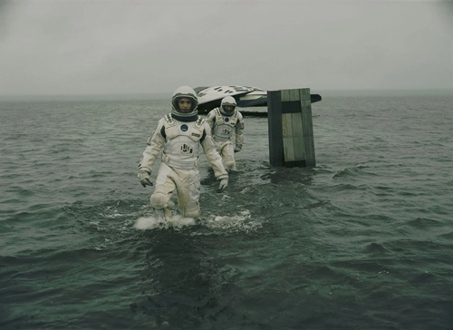
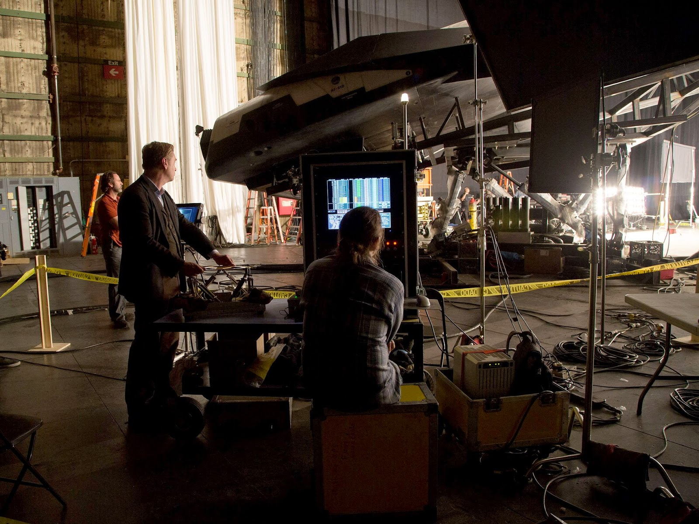
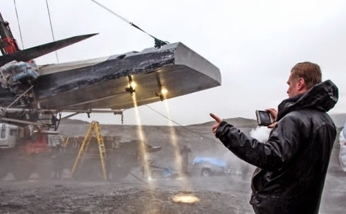
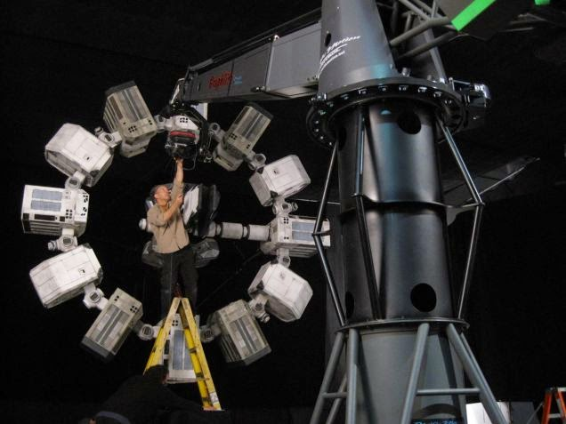
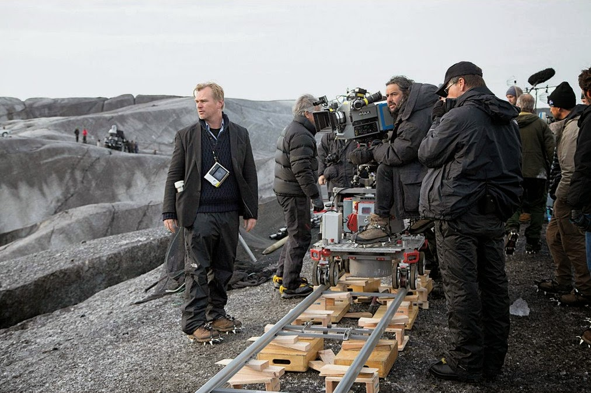
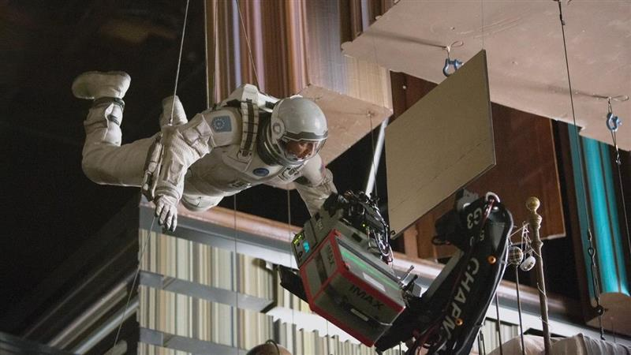
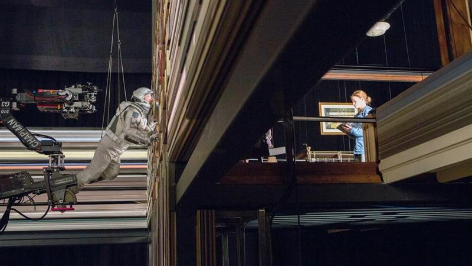

Fait Divers
Un voyage spatial épique qui a conquis le monde entier.
Sortie : 7 Novembre 2014.
Profits : $790,651,189
Prix reçu et distinctions : 5
Durée : 169 Minutes
Tournage & Bloopers





